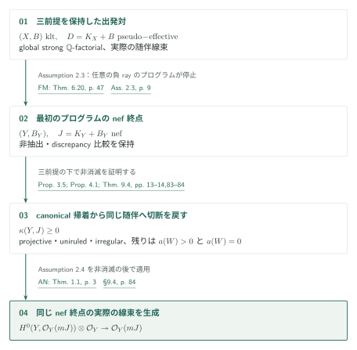
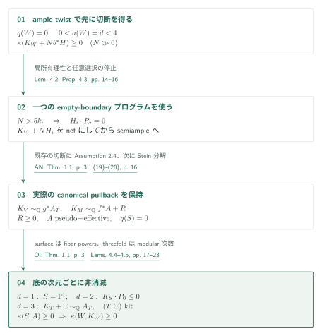
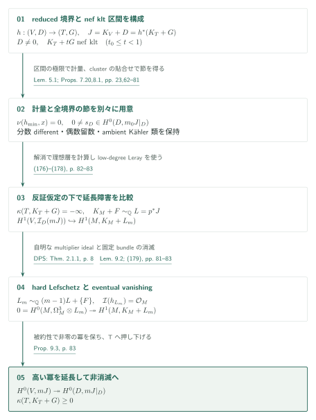

コンパクトKähler四次元の条件付き良い極小モデル――nef終点で最初の切断を得る
カタログ034・収録順03 / 内部ID: conditional-kahler-fourfolds
原典: OpenAI, Conditional good minimal models for compact Kähler fourfolds, 2026年10月5日版、138頁。固定版PDF。頁はPDF頁と一致する。本稿はAI生成の概説であり、原典の条件付き主張と、末尾に記す編集側の確認範囲を区別する。数学的判断には原典を参照されたい。
Theorems 1.1–1.2：指定したnef終点へ非消滅を戻す
以下ではAssumptions 2.2、2.3、2.4をすべて仮定する。Theorem 1.1、p.4の対象は、正規・連結・コンパクトKähler四次元空間\(X\)、有効な有理Weil因子\(B\)からなるklt対である。さらに\(X\)はglobally strongly \(\mathbb Q\)-factorial、実際の随伴線束\(D=K_X+B\)は\(\mathbb Q\)-Cartierかつ解析的にpseudo-effectiveとする。
結論は、同じglobal strong条件を持つ正規連結コンパクトKähler四次元空間\(Y\)と双有理型写像\(\phi:X\dashrightarrow Y\)の存在であり、次を満たす。
- \(\phi\)はprime divisorを抽出せず、\(B_Y=\phi_*B\)。
- \((Y,B_Y)\)はkltで、実際の\(\mathbb Q\)-Cartier随伴\(D_Y=K_Y+B_Y\)は解析的にnef。
- すべての上のprime divisor \(E\)について\(a(E;Y,B_Y)\geq a(E;X,B)\)。\(X\)上のprimeで\(\phi\)が縮約するものには不等号が厳密。
- ある\(m>0\)で\(mD_Y\)はCartierとなり、\(\mathcal O_Y(mD_Y)\)は大域生成される。
次数\(m\)の一様性は主張しない。Definition 2.1（p.7）のglobal strong条件は、空間全体上のすべてのcoherent rank-one reflexive sheafが可逆な正の反射的冪を持つことをいう。各解析開集合での局所\(\mathbb Q\)-factorialityに置き換えない。また\(\sim_{\mathbb Q}\)は正則線束の実際の同型を表し、Bott–Chern類の一致だけでは代用しない。
同じ3前提の下でTheorem 1.2、p.4は、global strong条件を持つ正規連結コンパクトKähler四次元のordinary klt対\((Y,\Delta)\)、有効有理\(\Delta\)、解析的にnefな実際の\(\mathbb Q\)-Cartier随伴\(J=K_Y+\Delta\)について、\(\kappa(Y,J)\geq0\)を主張する。最初のMMPで得た\((Y,B_Y)\)へこの定理を適用してから、Assumption 2.4を使う。

Assumption 2.3は既に(i)–(iii)を供給するが、切断を供給しない。§3はprojective・uniruled・irregularの場合を処理し、滑らかなnon-uniruled、non-Moishezon四次元\(W\)で\(q(W)=0\)のcanonical nonvanishingへ帰着する。\(a(W)>0\)をProposition 4.1、\(a(W)=0\)をTheorem 9.4で扱う。\(W\)上のcanonical切断を\(Y\)へ押し下げ、有効境界の切断を掛けてもとのnef対の\(J\)へ戻す。最後のsemiamplenessはその同じ\(J\)に対するAssumption 2.4である。Proposition 3.5、pp.13–14；§9.4、p.84
保持すべき3つの前提
| 前提 | 原典が要求する範囲 | 供給元と今回の照合 |
|---|---|---|
| Assumption 2.2（pp.7–8） | 任意次元のFujiki class \(\mathcal C\)、有理SNC境界の係数\([0,1]\)、連結fiberの正則全射に対するfull orbifold Iitaka subadditivity | OI（カタログ033）Thm.1.1、p.3と基底不変量の定義pp.2–3を照合。証明は未検証 |
| Assumption 2.3（pp.8–9） | 指定したpseudo-effective ordinary klt四次元から始めるMMP。任意の負の極端半直線を選べ、任意の有限prefixを延長でき、すべてのプログラムが停止 | FM（カタログ056）Thm.6.20、p.47；Prop.3.4、pp.12–14；Lem.3.2、p.11の記述・必要な証明箇所を照合。全停止証明は未検証 |
| Assumption 2.4（p.9） | 実際のnefな\(\mathbb Q\)-Cartier klt随伴で\(\kappa\geq0\)なら大域生成。strong factorialityは不要 | AN（034内14）Thm.1.1、p.3の記述を照合。最初の切断の存在は仮定 |
Assumption 2.2の不等式は
Assumption 2.3では初期modificationを挿入せず、負のrayを切り出すnef supporting classとKähler margin、連結fiberを持つ射影的双有理型縮約、負側の相対Bott–Chern次元1、smallの場合の実際のcanonical algebraの相対analytic Projを要求する。klt・Kähler・global strong条件・pseudo-effectivityを各段階で保持し、非抽出とdiscrepancy比較を伴う。非pseudo-effectiveプログラムやdlt・generalized pairのMMPがこの仮定から一括して与えられるわけではない。供給元の定理文を照合できても、この概説では3前提を成立済みの無条件な定理へ置き換えない。
正の代数次元：実際のcanonical pullbackを作る
§3のprojective分岐は、Assumption 2.2からLemma 3.1で対数的Iitaka前提を導き、同じ原稿のTheorem A.2（p.85）を適用する。Appendices A–Iはその条件付きprojective abundanceの証明であり、追加の独立な前提ではない。uniruled分岐はrational quotient、irregular分岐はAlbanese写像と、次元\(\leq3\)の非消滅を組み合わせる。OuのTheorem 1.1、p.1はsmooth Kählerの場合のnon-unirulednessとcanonical pseudo-effectivityを結ぶ入力である。§3、pp.10–14

\(0<a(W)=d<4\)では代数的reductionを解消し、射影底\(S_0\)のvery ample \(H\)を取る。低次元fiberの非消滅とample twistから、十分大きい全整数\(N\)について\(\kappa(K_W+Nb^*H)\geq0\)が先に得られる。各段階のcanonical Cartier indexを\(k_i\)として\(N>5k_i\)を選ぶ。\(K_{V_i}+NH_i\)に負のrayなら局所有理性により\(H_i\cdot R_i=0\)となり、そのstepは固定したempty-boundary \(K\)-programのstepでもある。\(N\)を選び直してもprogramの境界は変わらない。任意選択の停止とAssumption 2.4からtwistがsemiampleとなり、Stein分解で
\(d=1\)なら\(S=\mathbb P^1\)。\(d=2\)では曲線上の\(r\)重fiber powerにAssumption 2.2を適用する。局所形\(t=x^e\)と例外因子の係数\(h\)を先に固定して、底の係数の極を\(mrh/e\)で抑える。\(r\to\infty\)により
\(d=3\)のgeneric fibreはgenus oneである。Hodge line \(\mathcal H\)について\(\mathcal H^{\otimes m}\simeq\mathcal O_S(m(A-K_S))\)を得て、\(12\mid m\)の下で\(E_4^{m/4}\)と\(\Delta_{\rm mod}^{m/12}\)を用いる。integration threshold
代数次元零：whole reduced boundaryからの延長
ここでは\(a=q=0\)の滑らかなモデルを使う。Lemma 9.1（p.81）はprime divisorの有限性とそのcohomology類の実線形独立性を示す。\(\kappa(M,L)=-\infty\)なら、任意の固定vector bundle \(\mathcal E\)について \(H^0(M,\mathcal E\otimes\mathcal O_M(mL))=0\)が大きい可除次数\(m\)で成立する（Lemma 9.2、pp.81–82）。証明は最大generic rankの切断のdeterminantを取り、有限個のprimeに沿う非負整数係数を比較する。global meromorphic frameを最初から仮定しない。

Proposition 7.20（pp.62–65）はreduced boundary \((T_0,G_0)\)から非抽出的に\((T,G)\)を作り、
Lemma 5.1の解析的証明は§5内にある。体積で正規化したcapacity評価、Monge–Ampère方程式のパラメータ微分、残差を残したBochner評価を組み合わせる。最後は同じsublevel集合上で残余測度を相殺する式(89)と、固定\(t\)での極限後のLelong上界(90)を、正の下界(93)と衝突させる。pp.25–33 先のprojective論文MMの定理をそのまま非projectiveの場合へ適用しているのではない。
Proposition 8.1（pp.65–81）は\(D\ne0\)なら\(H^0(D,\mathcal O_D(mJ))\ne0\)を与える。正規化した各成分のdifferentは分数係数も保持し、Das–Ou Corollary 1.3、p.4でsemiample系を作る。しかし成分ごとのabundanceだけでは貼り合わない。系の像の次元が最大の成分を選び、dominant conductorのcluster上で偶数留数を合わせ、nondominant branchesでは消える節を作る。有限のloop作用の下で運ばれる節をすべて掛けるLemma 8.4が、非零性と所要の消滅を保存する。
非projectiveのtorsion clusterでは、原空間\(V\)の一つのKähler類を各surfaceへ運ぶ。閉路の自己同型\(\varphi\)と正の平方を持つ類\(v\)について \(\varphi^*v-v\in\operatorname{NS}(Q)_{\mathbb R}\)を得る。Hodge indexと整格子の作用によりtop formの倍率がroot of unityとなり、共通冪で留数を合わせられる。これは任意のKähler surface自己同型の指標を無条件に有限とする議論ではない。Lemma 8.9、pp.73–74 最後に他のclusterを零とし、\(S_2\)とcodimension-oneの照合で\(D\)全体へ降ろす。Lemma 8.2；§8.6、pp.66–67,81
Proposition 9.3では\(\kappa(T,A)=-\infty\)と仮定して延長障害を消す。\(p:M\to V\)上で\(K_M+F\sim_{\mathbb Q}L=p^*J\)と書く。\(F\)はSNC、係数\(\leq1\)で負の係数を許す。重要な比較は
canonical frameの有無を分けて完結する
Theorem 9.4（pp.83–84）は、非零の有理型pluricanonical tensorが存在するか否かを分ける。存在しない場合、\(G_0\)に全primeを入れてProposition 7.20を使う。非零\(G\)なら前節の切断を割り戻して禁止された有理型tensorが得られるため、\(G=0\)。するとprime divisorがなくnef canonicalを持つモデルが残り、Proposition 6.1がこれを排除する。
Proposition 6.1の証明は、nef canonicalのzero-Lelong metricとDPSから\(\chi(\mathcal O_M)=0\)、\(h^{2,0}\geq1\)、\(h^{3,0}\geq2\)を得る。2-formと3-formからintegrable saturated conormal lineを取り出す。正currentのHodge index比較により\(\alpha^2=0\)を導き、仮定の下で\(\alpha\)内のすべての正currentのLelong数が零となることを示す。これによって正current全体のcompact convex集合上の写像が連続になり、固定点がtransverse spherical構造を与える。§6.1–§6.4、pp.34–43
index chartsでboundary meridianのholonomyが有限であることを示し、Selbergの有限被覆とcompactificationを経てtorsion-freeな\(\operatorname{PU}(2)\)表現を得る。Zariski denseの場合はCampana–Claudon–Eyssidieux Theorem 1、p.2のprojective Shafarevich底が\(a=0\)に反する。proper closureの場合はvirtually solvableであり、全有限étale被覆の\(q=0\)から像を有限、従って自明にする。developing mapを局所chartとtraceで有理型延長すると非定数関数が生じ、再び\(a=0\)に反する。§6.5–§6.6、pp.43–47
有理型frameが存在する場合は\(K_{T_0}\sim_{\mathbb Q}P-N\)、\(P,N\geq0\)、台が互いに素と書き、\(G_0=(\operatorname{Supp}P)_{\rm red}\)を使う。\(G=0\)ならpseudo-effectivityが\(N_T=0\)を強制する。\(G\ne0\)なら前節の切断と\(a(T)=0\)による有理型divisorの一意性が同じ結論を与える。さらに\((T,0)\)のMMPとAssumption 2.4でcanonicalを実際のtorsionにする。解消上の符号付き例外divisorは、正currentのsupportとprime類の独立性から有効と分かり、滑らかなモデルのcanonical nonvanishingへ戻る。式(180)–(181)、p.84
入力・原典・確認範囲
| 結果 | 使用箇所と役割 | 確認範囲 |
|---|---|---|
| OI Thm.1.1、p.3 | Assumption 2.2、§§3–4、Lemma 6.2、Lemma 8.3：不変なorbifold底を使うsubadditivity | 定理文・基底定義・記載の適用を照合。neatモデル理論と入力の証明は未検証 |
| FM Thm.6.20、p.47；Prop.3.4、pp.12–14 | Assumption 2.3、Prop.4.3、Prop.7.20、§9.4 | 任意rayの停止、canonical algebra、global strong条件の保存を照合。停止証明の全依存は対象外 |
| AN Thm.1.1、p.3 | Assumption 2.4、Prop.4.3、Thm.9.4、Thm.1.1の最終段階 | \(\kappa\geq0\)を得た後の使用を照合。ANの証明は対象外 |
| Ou Thm.1.1、p.1 | Prop.3.5、§8等：smooth Kähler canonicalのpseudo-effectivity | 指定v1の記述を照合 |
| DO Cor.1.3、p.4 | Lem.8.3：正規threefold成分のsemiample系 | 指定v4の記述を照合。付随するdlt modificationの別論文は未照合 |
| DPS hard Lefschetz | Lem.6.3、Prop.9.3：twisted formsからcohomologyへの全射 | arXiv v2の無番号導入定理p.2 / Thm.2.1.1 p.8で内容を照合。本稿は出版版Thm.0.1として引用 |
| CCE Thm.1、p.2 | Lem.6.13：semisimple holonomyのprojective底 | arXiv v3の定理文・torsion-free条件を照合 |
原稿commitはadc7f1241b42e322a6451854ab7e4b4c146bf78a、SHA-256はac000b352a0abe8e1a2dfd99bef21dcbf232fae995e2395048a528c02157270c。sources.jsonに版・頁・照合範囲、status.mdに作業記録を保存した。
主定理・3前提・§3の帰着・§4のcanonical pullbackと底の計算・§5のcapacityから残差処理への主要箇所・§6のforms/Hodge/fixed-point/holonomyの主要箇所・Proposition 7.20・§8のclusterとambient class・§9全体を読解した。§7の相対有限生成・抽出・special terminationの全証明、§8のprojective cluster各場合の詳細、Appendices A–I全体は未検証である。metricの全極限操作、singular chartの全延長、Fujinoの局所有理性・相対MMP等の元論文も独立検証していない。これらは未確認であり、「依存なし」や「条件が解消済み」を意味しない。